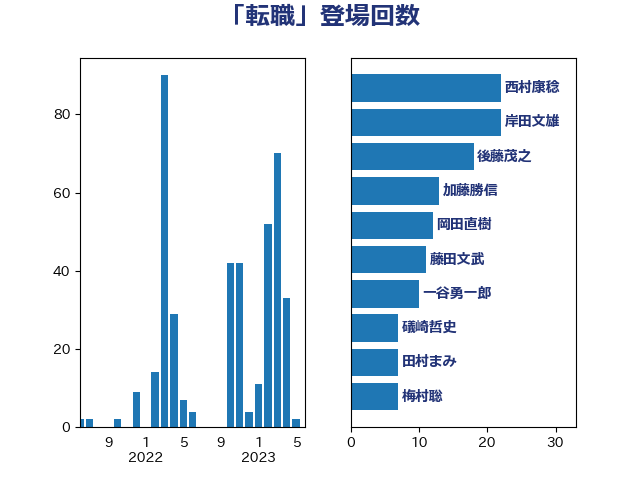

単語「転職」

| 西村康稔 | 自由民主党 | 22 回 |
| 岸田文雄 | 自由民主党 | 22 回 |
| 後藤茂之 | 自由民主党 | 18 回 |
| 加藤勝信 | 自由民主党 | 13 回 |
| 岡田直樹 | 自由民主党 | 12 回 |
| 藤田文武 | 日本維新の会 | 11 回 |
| 一谷勇一郎 | 日本維新の会 | 10 回 |
| 礒崎哲史 | 国民民主党 | 7 回 |
| 田村まみ | 国民民主党 | 7 回 |
| 梅村聡 | 日本維新の会 | 7 回 |
| 梅村みずほ | 日本維新の会 | 7 回 |
| 高良鉄美 | 無所属 | 6 回 |
| 金村龍那 | 日本維新の会 | 6 回 |
| 音喜多駿 | 日本維新の会 | 5 回 |
| 石井苗子 | 日本維新の会 | 5 回 |
| 鈴木庸介 | 立憲民主党 | 4 回 |
| 赤澤亮正 | 自由民主党 | 4 回 |
| 柳ヶ瀬裕文 | 日本維新の会 | 4 回 |
| 山本香苗 | 公明党 | 4 回 |
| 齋藤健 | 自由民主党 | 3 回 |
| 鈴木俊一 | 自由民主党 | 3 回 |
| 野田聖子 | 自由民主党 | 3 回 |
| 藤巻健太 | 日本維新の会 | 3 回 |
| 荒井優 | 立憲民主党 | 3 回 |
| 羽田次郎 | 立憲民主党 | 3 回 |
| 窪田哲也 | 公明党 | 3 回 |
| 石井啓一 | 公明党 | 3 回 |
| 村田享子 | 立憲民主党 | 3 回 |
| 山際大志郎 | 自由民主党 | 3 回 |
| 小野泰輔 | 日本維新の会 | 3 回 |
| 伊藤孝恵 | 国民民主党 | 3 回 |
| 阿部司 | 日本維新の会 | 2 回 |
| 西田実仁 | 公明党 | 2 回 |
| 舞立昇治 | 自由民主党 | 2 回 |
| 羽生田俊 | 自由民主党 | 2 回 |
| 美延映夫 | 日本維新の会 | 2 回 |
| 稲津久 | 公明党 | 2 回 |
| 福重隆浩 | 公明党 | 2 回 |
| 神田潤一 | 自由民主党 | 2 回 |
| 石橋通宏 | 立憲民主党 | 2 回 |
| 畦元将吾 | 自由民主党 | 2 回 |
| 田中健 | 国民民主党 | 2 回 |
| 河野太郎 | 自由民主党 | 2 回 |
| 水野素子 | 立憲民主党 | 2 回 |
| 櫻井周 | 立憲民主党 | 2 回 |
| 新垣邦男 | 立憲民主党 | 2 回 |
| 斎藤アレックス | 国民民主党 | 2 回 |
| 平木大作 | 公明党 | 2 回 |
| 川合孝典 | 国民民主党 | 2 回 |
| 岬麻紀 | 日本維新の会 | 2 回 |
| 小森卓郎 | 自由民主党 | 2 回 |
| 宮本徹 | 日本共産党 | 2 回 |
| 天畠大輔 | れいわ新選組 | 2 回 |
| 大島敦 | 立憲民主党 | 2 回 |
| 大串正樹 | 自由民主党 | 2 回 |
| 塩崎彰久 | 自由民主党 | 2 回 |
| 土田慎 | 自由民主党 | 2 回 |
| 伊藤岳 | 日本共産党 | 2 回 |
| 伊藤俊輔 | 立憲民主党 | 2 回 |
| 中川郁子 | 自由民主党 | 2 回 |
| おおつき紅葉 | 立憲民主党 | 2 回 |
| 鰐淵洋子 | 公明党 | 1 回 |
| 高木かおり | 日本維新の会 | 1 回 |
| 馬場伸幸 | 日本維新の会 | 1 回 |
| 青木愛 | 立憲民主党 | 1 回 |
| 長峯誠 | 自由民主党 | 1 回 |
| 長友慎治 | 国民民主党 | 1 回 |
| 鈴木英敬 | 自由民主党 | 1 回 |
| 鈴木義弘 | 国民民主党 | 1 回 |
| 鈴木敦 | 国民民主党 | 1 回 |
| 進藤金日子 | 自由民主党 | 1 回 |
| 輿水恵一 | 公明党 | 1 回 |
| 赤木正幸 | 日本維新の会 | 1 回 |
| 葉梨康弘 | 自由民主党 | 1 回 |
| 萩生田光一 | 自由民主党 | 1 回 |
| 石川香織 | 立憲民主党 | 1 回 |
| 石垣のりこ | 立憲民主党 | 1 回 |
| 片山大介 | 日本維新の会 | 1 回 |
| 源馬謙太郎 | 立憲民主党 | 1 回 |
| 深澤陽一 | 自由民主党 | 1 回 |
| 浮島智子 | 公明党 | 1 回 |
| 浅田均 | 日本維新の会 | 1 回 |
| 沢田良 | 日本維新の会 | 1 回 |
| 永岡桂子 | 自由民主党 | 1 回 |
| 榛葉賀津也 | 国民民主党 | 1 回 |
| 森田俊和 | 立憲民主党 | 1 回 |
| 日下正喜 | 公明党 | 1 回 |
| 打越さく良 | 立憲民主党 | 1 回 |
| 平山佐知子 | 無所属 | 1 回 |
| 山崎正恭 | 公明党 | 1 回 |
| 小沢雅仁 | 立憲民主党 | 1 回 |
| 宮本岳志 | 日本共産党 | 1 回 |
| 大塚耕平 | 国民民主党 | 1 回 |
| 堂故茂 | 自由民主党 | 1 回 |
| 吉田統彦 | 立憲民主党 | 1 回 |
| 吉田久美子 | 公明党 | 1 回 |
| 吉田はるみ | 立憲民主党 | 1 回 |
| 吉田とも代 | 日本維新の会 | 1 回 |
| 古賀之士 | 立憲民主党 | 1 回 |
| 佐々木さやか | 公明党 | 1 回 |
| 伊佐進一 | 公明党 | 1 回 |
| 中条きよし | 日本維新の会 | 1 回 |